StopWatch Grok 表情预览21 个 Grok 表情 · 圆屏资源 v3
黑底白色角色，466×466；16 帧循环。此页仅预览素材，文字说明不会画进 GIF。各表情按动作范围放大，带轨迹的表情主体可能较小。
尚未进行真机测试。隐藏对话字幕并将普通文字字体设为透明字形；顶部覆盖层仍可能遮挡形象，开机/特殊字体提示仍可能出现。原唤醒词保持不变。
来源：grok-icon-study，仅供本地学习测试。
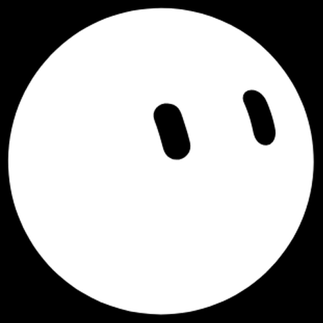
默认 / neutral
→ idle · 直接开心 / happy
→ happy · 直接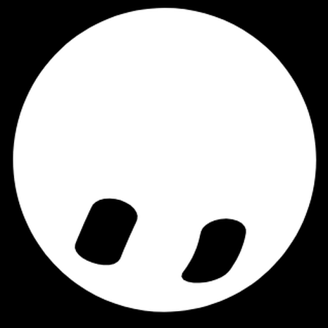
大笑 / laughing
→ laughing · 直接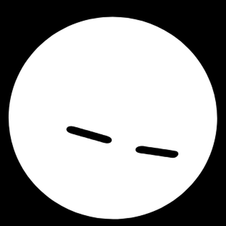
难过 / sad
→ sad · 直接生气 / angry
→ angry · 直接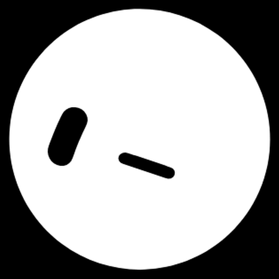
困惑 / confused
→ confused · 直接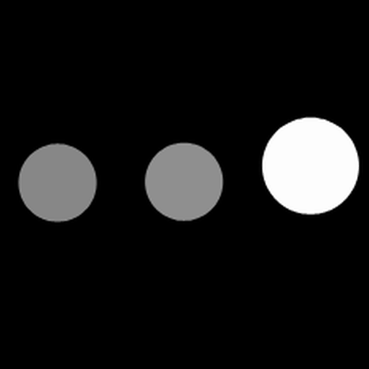
思考 / thinking
→ thinking · 直接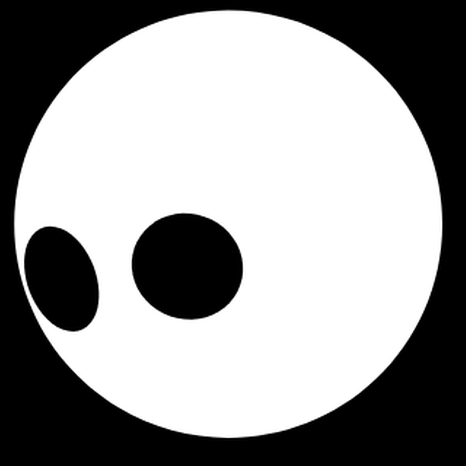
惊讶 / surprised
→ surprised · 直接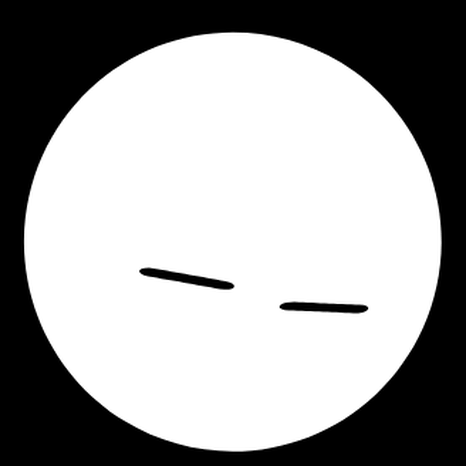
困倦 / sleepy
→ drowsy · 近似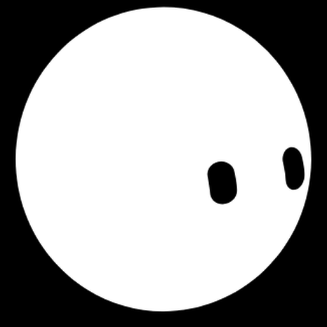
自信 / confident
→ proud · 近似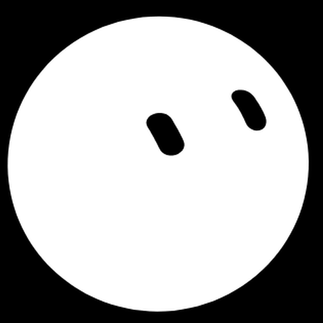
害羞 / embarrassed
→ shy · 近似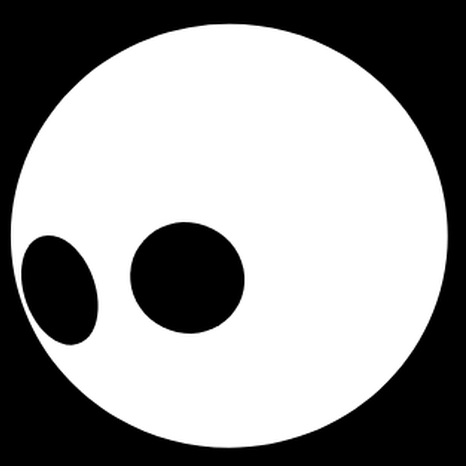
震惊 / shocked
→ scared · 近似搞怪 / funny
→ playful · 近似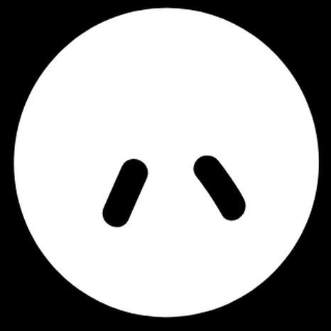
傻笑 / silly
→ playful · 近似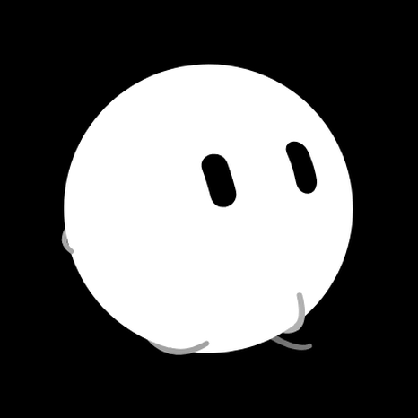
放松 / relaxed
→ humming · 近似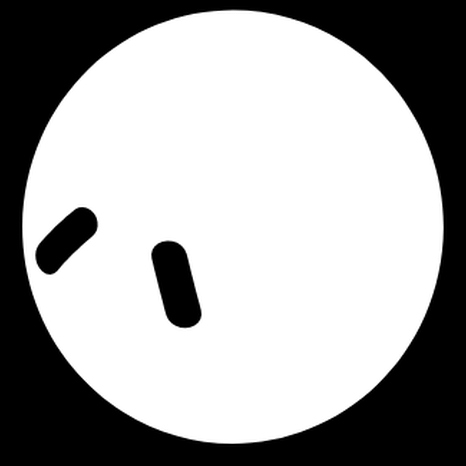
酷 / cool
→ proud · 近似喜爱 / loving
→ happy · 近似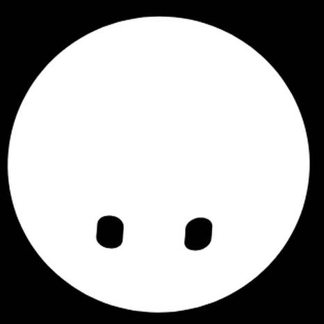
亲吻 / kissy
→ shy · 近似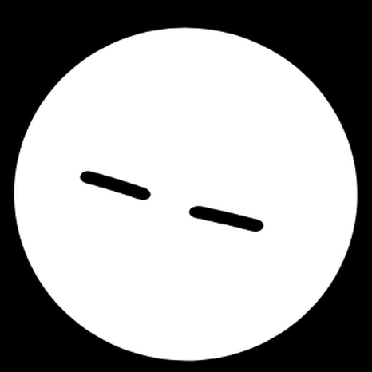
哭泣 / crying
→ sad · 近似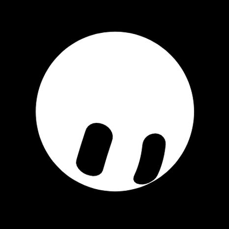
美味 / delicious
→ excited · 近似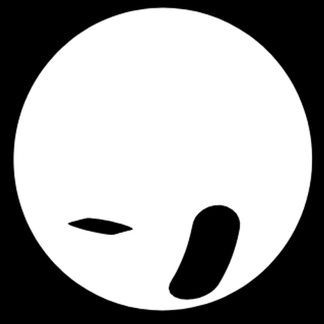
眨眼 / winking
→ playful · 动作